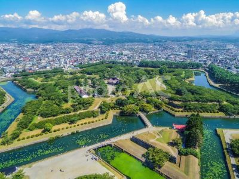

Goryoukaku
Goryokaku is a historic fort in Sapporo, Hokkaido. It was built in the 1850s and is one of the most well-preserved examples of a Western-style fortification in Japan. I included it because it appears in my favorite manga. It might not be as impressive compared to other tourist spots, but I want you to give it a try.